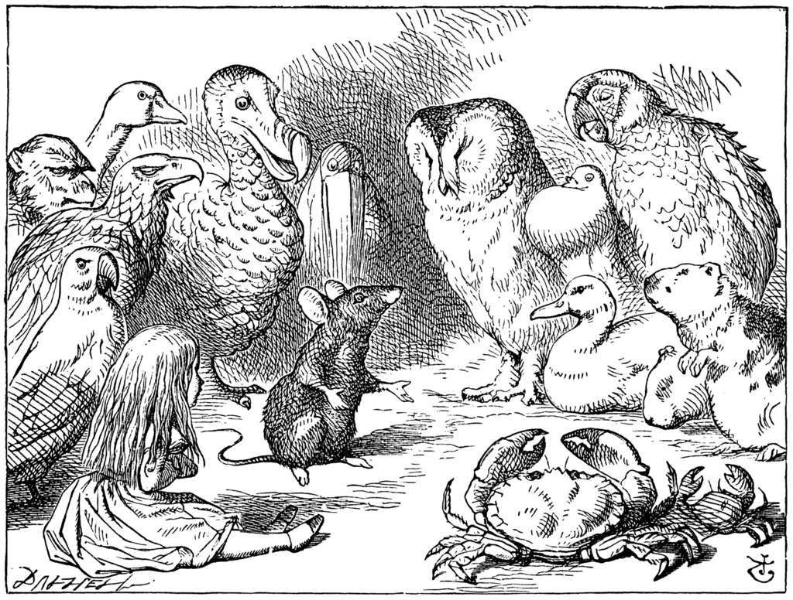

The animals gathered on the shore dripping wet and uncomfortable.
They discussed how to dry themselves.
The Mouse attempted to read a historical story to dry everyone.
But the birds quickly grew bored.
The Dodo suggested a "Caucus Race."
Everyone began running in circles without clear rules.
Eventually the Dodo declared that everyone had won.
Alice handed out candies as prizes.
The Dodo then presented Alice with her own thimble as a prize.
Later the Mouse attempted to tell its long and sad tale.
But Alice misunderstood it as the Mouse's long tail.
Offended, the Mouse stormed away leaving Alice alone once again.